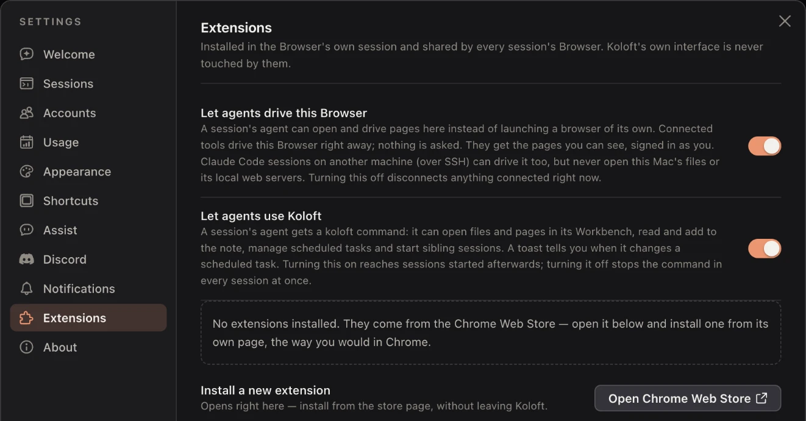

Agents can use Koloft too
An agent lives in its terminal. On its own it cannot put a file in front of you, leave a line for tomorrow's session, or use the browser you are signed into. Koloft gives it two things: a koloft command, and the web tabs in its own Workbench.
The koloft command
Every session Koloft starts gets a koloft command: Claude, Codex, Muse or
Antigravity, on this Mac and on a remote folder's machine. It is
on by default. The switch is Settings ▸ Extensions ▸ "Let agents use Koloft". Turning it
on reaches sessions you start after that. Turning it off stops the command in every
session at once. When an agent changes a scheduled job, a small message pops up to tell
you.
With it, the agent can:
Workbench and note
-
koloft open— show you a file or a web page in its Workbench, in front (see web tabs) koloft diff— show you what changed in a file since the last commit-
koloft note— read the note it shows (its folder's, or the butler's own), or add a line to the end of it
Passwords and codes
When the session needs something only you know, and you are on your phone, it can ask in your butler's Discord channel, on a card that names the session (see passwords and codes on Discord), which says what happens to what you type. The agent never sees it.
-
sudo(the Mac's admin command) — asudothe session runs with no terminal asks you for the password on Discord, instead of failing -
koloft secret page "<css selector>"(the field's address on the page) — a password or one-time code for a field on a web page in its Workbench -
koloft secret url "<sign-in address>"— a sign-in that ends on a127.0.0.1address (an address on the machine itself); you finish it on your phone and paste the last address
With no Discord channel bound, all three are refused with a message that says so.
Scheduled jobs
-
koloft cron— list, show, add, change, remove, turn on or off, or run a job now; each job has its own timer, tool, model, effort and permission, and says whether its run closes itself when done (--when-done openorclose; see Sessions on a timer)
Sessions
-
koloft session list— see every session the folder shows in the sidebar: the open ones first, and whether each is working, asking you a question, finished its turn, or idle; then the closed and sleeping ones, with when each was last active and its id. A session started withsession newalso says who started it:started by: you, or the starter's name -
koloft session new— start a session of the same kind (a Claude session starts Claude, and so on), or the kind--backendpicks; in its own git worktree with-w; a worktree name already in use gets-2after it. When your butler (see below) starts one in a folder git tracks and leaves out-w, Koloft still makes a worktree (see worktree sessions). Its row hangs under the session that started it (see sessions an agent starts). A session it starts gets a short title that Assist makes from its task (with Assist off, the first line of the task), or the name the agent gave it with--name; the same title shows in the sidebar, insession listand in Discord. Every kind of session gets this, except an Antigravity session in a remote folder: Antigravity names that one itself, and--nameis turned down. -
koloft session read— print what a session said in its last turns, open or closed -
koloft session send— Codex: message another Codex session (a Claude session uses its own SendMessage tool). Any session: report back to the session or butler that started it, by the id it was given. If that one is asleep or its tab was closed, Koloft starts it again first. The report arrives marked(From the session "…", id …:). When a session thatsession newstarted ends its first turn without reporting, Koloft hands its reply to the starter by itself, the same way; a reply already sent withsession sendis not sent twice. -
koloft session close— close itself, or any session started under it withsession new(by it, by one it started, and so on down the chain), for good: its tab, its row in the sidebar, and its worktree and branches if it had one. The ended sessions it started are closed with it, and so are the ones those started; Koloft names any it left (still open, or holding work). When you ask, it may also close any other session on this Mac that has ended (an open one is refused: stop it first). Koloft says no, and lists what is left, while:- a file is not committed
- a commit is not on the remote yet (unless GitHub shows they are the last commits of a pull request that was merged, as after a squash merge that deleted the branch)
- another open session uses that worktree
-
koloft session resumeandkoloft session stop— resume a closed session, with a first message if it likes; close a session's tab and keep it in the list -
koloft session screen,koloft session keysandkoloft session answer— see what an open session's terminal shows, press keys in it as you would at the Mac, or answer the question it is showing -
koloft session command— run one slash command (like/compact) in a session, or in itself, once that session is idle; what it printed comes back as a message from Koloft koloft workspace list— list the folders in the sidebar
session list and session new take
--workspace <folder> to reach another folder in the
sidebar, by its name or its full path. A session started into another folder this way sits
at the top of that folder's list (see
sessions an agent starts). The folder may be a
remote folder: the session then runs on that machine, and a
Claude Code session there is reached with session send, since
Claude's own messages between sessions stay on one machine.
With "Let agents use Koloft" on, every session is also told which helper fits which job.
Work that needs its own branch or worktree goes to a Koloft session started with
-w. It never goes to a hidden helper, or to a branch in the
folder other sessions share.
Each command prints its answer, so the agent sees what happened. The agent runs
koloft help for the rest.
GitHub
-
koloft gh— run one ofgh's own commands (ghis GitHub's command-line tool) with the GitHub account Koloft picked for the folder, in the session's own folder, and print what it said. Refused:gh auth,alias,extension,configandcopilot, aliases and extensions, a--jqfilter that reads the environment, and a--, since each could reach the GitHub sign-in
Your butler, Koloft's own AI that you talk to from the sidebar or from Discord, uses the same commands. Only it, with a Discord channel bound, can send you files or a picture of a page on Discord. See what your butler can do.

Your browser, for the agent
Browser tools for agents normally start a browser of their own. It is a second browser you cannot see, and it is signed into nothing. Koloft offers its web tabs instead. Every session on this Mac gets a secret CDP address (CDP is the Chrome DevTools Protocol, the way tools steer a browser). A browser tool that uses it steers that session's own web tabs. This works while Settings ▸ Extensions ▸ "Let agents drive this Browser" is on. How the address reaches the tool differs by tool.
playwright-cli, for Claude Code and Codex
playwright-cli (a command that controls a browser: open a page, click, type,
read it) comes with Koloft. Every Claude Code or Codex session on
this Mac can run it by name, with nothing to install. With "Let agents drive this Browser"
on, it opens its pages as new web tabs of that session, marked as driven by the agent.
With it off, it starts a hidden browser of its own. A session's web tabs take one tool at
a time. If the Playwright MCP tools below (an MCP server is a box of tools an agent can
call) are already driving them, the second tool is refused.
Claude Code
-
playwright-mcp: nothing to set up. It reads
PLAYWRIGHT_MCP_CDP_ENDPOINT, which is already set for the session, so it opens a tab in Koloft and not a browser of its own. -
your own Playwright script: one line, with the address in
KOLOFT_BROWSER_CDP.
chromium.connectOverCDP(process.env.KOLOFT_BROWSER_CDP)
Codex
Koloft hands the address to the Playwright MCP server in your Codex settings. If your
Codex settings have an @playwright/mcp entry, its browser tools open tabs in
Koloft and not a browser of their own. Those tools and playwright-cli reach
the web tabs. To let them, the session's sandbox (the box Codex runs commands in) gets the
network and Playwright's cache folder, for that session only. A session started with
Skip permission prompts on has no sandbox, so it needs none of
this.
What to expect
| case | what happens |
|---|---|
| it connects | It just drives. Koloft asks nothing; the switch is its one control. Codex, on its usual permissions, asks you once per thread whether to allow the tool. That question is Codex's own. |
| pages it opens |
Background web tabs with an unread dot, not in front like
koloft open, since a tool driving a browser may open many pages at
once. No pane opens by itself, and the tab it is driving is marked.
|
| pages it can see | That session's tabs only. Each session has its own address, reachable only from this Mac, behind a path no one can guess. A Claude Code session on a remote folder also reaches it from that machine, through Koloft's ssh link. |
| turning it off | Settings ▸ Extensions ▸ "Let agents drive this Browser". Off cuts whatever is connected right now. A session you start after that goes back to its own browser. A session already running keeps the old address, and its tool fails until you restart that session. |
| the trade | The agent drives the browser you are signed into. That is the point, and it is what the switch is for. |
Claude Code on a remote folder
A Claude Code session on a remote folder can drive its web tabs
too, through Koloft's own ssh link to that machine. There it works only through
playwright-cli, not Playwright MCP tools. Koloft puts
playwright-cli on the machine with npm (Node's package tool) the
first time the session runs it (see
what Koloft installs there), and it finds the address on
its own each time it runs.
-
The web tabs live on your Mac, so from the machine it can never open a file of your Mac,
upload one, or open a web server running on your Mac (
localhost,127.0.0.1, or any address that is your Mac). It is told:a session on another machine cannot reach files or local servers of the Mac Koloft runs on. A web server it starts on the machine shows only at an address your Mac can reach (the machine's own name or IP address), never aslocalhost. - A web tab it has used keeps these limits for you too, until you close it.
-
With the switch off, while Koloft is not connected to the machine, or when the machine's
ssh server does not allow port forwarding,
playwright-clisays why and cannot reach the web tabs.
If you run tools another way (Claude Code)
-
an explicit
--cdp-endpointwins, so you can point one tool at another browser without the switch -
--isolateddoes not get a tool out: the address Koloft set still wins, and the switch is the way out
Not there yet
-
the browser for Codex, Muse and Antigravity in remote folders(they have the koloft command there, but not the web tabs yet)
Next page → Sessions on a timer